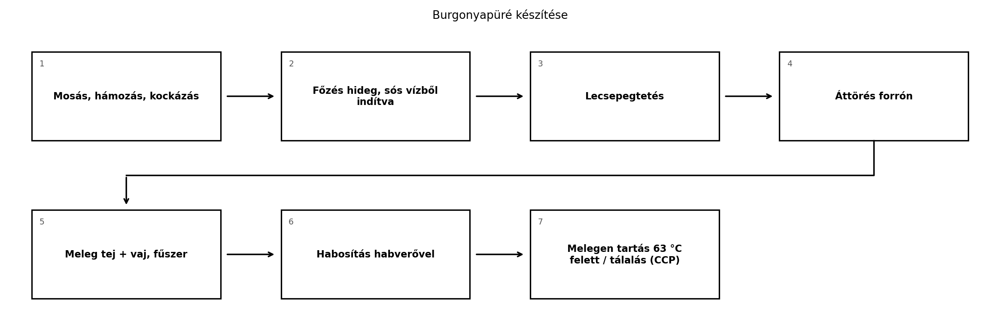
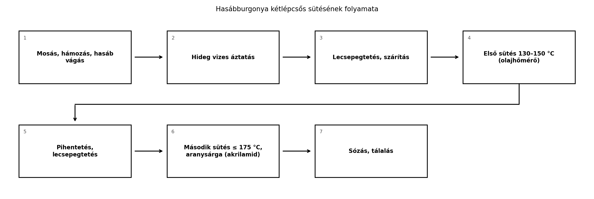

A burgonya a magyar konyha leggyakoribb körete. Egy reggeli előkészítéskor a séf azt kérdezi: hámoztam-e elég burgonyát, és melyik fajtát használjam a püréhez, melyiket a hasábburgonyához. Ha rosszul választunk, a püré nyúlós lesz, a hasábburgonya szétesik. Ebben az alfejezetben a burgonyaköretek fajtaválasztását, előkészítését, főzését, sütését és párolását tanuljuk meg lépésről lépésre.
A burgonya nem mindig viselkedik egyformán. Főzés közben egyes fajták szétesnek, mások kemények maradnak. A különbséget a keményítőtartalom és a szövetszerkezet adja. A konyhai gyakorlatban ezért főzési típusok szerint csoportosítjuk a burgonyát. A jelölés lehet szám, betű vagy kereskedelmi név. A következő táblázat a klasszikus konyhatechnológiai felosztást mutatja.
| Típus | Jellemző | Mire használd köretben | Megjegyzés |
|---|---|---|---|
| A – saláta típus | Kemény, nem szétfővő, alacsony keményítőtartalom | Egészben főtt burgonya, hideg saláták | Jól szeletelhető |
| B – főzni való típus | Enyhén szétfővő, közepes keményítőtartalom | Sós, petrezselymes, párolt burgonya | A legáltalánosabb |
| C – sütni való / lisztes típus | Szétfővő, magas keményítőtartalom | Burgonyapüré, krokett, hercegnőburgonya, hasábburgonya | Levegősebb pürét ad |
| D – nagyon lisztes típus | Nagyon szétesik, nagyon magas keményítőtartalom | Ipari pürék, sűrítés | Háztartási köretben ritka (ellenőrizendő: fajtajelölés) |
Szabály. A köret technológiája határozza meg a burgonyafajtát. Amelyik ételnél fontos az egyben maradó forma, oda A vagy B típust válassz. Amelyiknél áttörjük vagy ropogósra sütjük, oda C típust válassz. A kereskedelmi csomagoláson gyakran jelzik: „salátaburgonya”, „főzni való”, „sütni való” (ellenőrizendő: fajtajelölés).
A főtt burgonyaköretek alapja a szakszerűen főzött burgonya. Az előkészítés során a burgonyát alaposan megmossuk, mert a talajmaradvány a készételbe kerülhet. Hámozás után eltávolítjuk a sérült részeket és a mély szemeket. A hámozott burgonyát azonnal hideg vízbe tesszük, hogy ne barnuljon meg, és legfeljebb addig tartjuk vízben, amíg a felhasználásig szükséges. A hosszú áztatás oldja a felületi keményítőt, de tápanyagot is kiold.
Higiénia. A hámozott burgonyát ne tárold szobahőmérsékleten órákig. Hideg víz alatt, hűtve tartsd, és felhasználás előtt alaposan csepegtesd le. Főzés után a burgonya gyorsan romlik a veszélyes hőmérsékleti zónában (5–60 °C) (ellenőrizendő: pontos határ), ezért 63 °C felett tartsd melegen, vagy hűtsd vissza a könyv egységes szabálya szerint: a főzés végétől 2 órán belül 20 °C alá, további 4 órán belül 5 °C alá (tanulási érték) (ellenőrizendő: idő/hőmérséklet, NÉBIH-útmutató / HACCP-terv).
Sós burgonya. A hámozott, lehetőleg egyenletes darabokra vágott burgonyát hideg, sós vízben tesszük fel, felforraljuk, majd gyöngyöző forrásban főzzük; így kívül-belül egyenletesen puhul (a nagy darab forró vízben kívül szétfő, mire a közepe megpuhul). Közepes lángon főzzük. Villapróbával ellenőrizzük: a villa hegye könnyen belemegy, de a darab nem esik szét. Leszűrjük, jól lecsepegtetjük, és azonnal tálaljuk vagy felhasználjuk. Tálaláskor olvasztott vajat vagy kevés olajat kaphat.
Petrezselymes burgonya. A sós burgonya alapjára készül. Miután a főtt burgonyát leszűrtük, egy serpenyőben vajat olvasztunk, hozzáadjuk a finomra vágott petrezselymet, majd a burgonyát óvatosan átforgatjuk. A vaj ne égjen meg, mert akkor keserű ízt ad. A petrezselymet a legvégén adjuk hozzá, hogy megőrizze a színét és az illatát.
Burgonyapüré. A burgonyapüréhez sütni való, lisztes fajtát válasszunk. A hámozott, egyenletes kockákra vágott burgonyát sós vízben puhára főzzük. Leszűrés után alaposan lecsepegtetjük, és még forrón áttörjük krumplinyomóval vagy szitán. Forrón az áttörés könnyű, és a püré nem lesz csomós. Ezután hozzáadjuk a meleg tejet, az olvasztott vajat, sót és őrölt szerecsendiót. Habverővel simára keverjük. A tej legyen meleg, mert a hideg tej megdermedhet a forró burgonyán, és a püré csomós lesz. Az állag legyen sima, levegős, de ne folyjon szét.
A burgonyapüré lépéssorát az alábbi folyamatábra foglalja össze. A két kritikus hely: az áttörés (csak forrón, különben csomós lesz) és az utolsó lépés, ahol a kész pürét melegen kell tartani vagy gyorsan vissza kell hűteni.

A sült burgonyaköretek közül a hasábburgonya a leggyakoribb. A jó hasábburgonya kívül ropogós, belül puha. Ezt az állagot csak megfelelő fajtával és kétlépcsős sütéssel érhetjük el.
Előkészítés. Sütni való, lisztes burgonyát válasszunk. Mossuk meg, hámozzuk meg, majd vágjuk egyenletes hasábokra. A szokásos méret körülbelül 1 cm × 1 cm keresztmetszetű, 6–8 cm hosszú darab (ellenőrizendő: üzemi szabvány). A hasábokat hideg vízben áztassuk 20–30 percig. Az áztatás kioldja a felületi keményítőt, így a hasábok nem ragadnak össze, és sütés után ropogósabbak lesznek. Áztatás után alaposan csepegessük le, és töröljük szárazra, mert a nedves burgonya bő olajba téve veszélyesen fröcsög.
Kétlépcsős sütés. A kétlépcsős sütés lényege: az első, alacsonyabb hőmérsékletű sütés megfőzi a hasáb belsejét, a második, magasabb hőmérsékletű sütés kialakítja a ropogós kérget. Első sütés: 130–150 °C-os olajban 5–7 percig sütjük (ellenőrizendő: olajhőmérséklet). A hasábok halványak maradnak, nem barnulnak meg. Majd szűrőkanállal kiemeljük, lecsepegtetjük, és 15–20 percig pihentetjük. Második sütés: legfeljebb 175 °C-os (kb. 170–175 °C-os) olajban 3–4 percig sütjük aranybarnára (ellenőrizendő: olajhőmérséklet; az akrilamid-csökkentési rendelet ajánlása és a gyártói utasítás). Végül lecsepegtetjük, és forrón sózzuk.
Megjegyzés. Az akrilamid a magas keményítőtartalmú élelmiszerekben, 120 °C feletti sütéskor képződhet, különösen a barnára sült kérgekben. Az Európai Unió ezért csökkentési intézkedéseket ír elő (ellenőrizendő: hatályos rendelet, pl. a Bizottság (EU) 2017/2158 rendelete; vendéglátásban a hasábburgonya sütése 175 °C alatti olajhőmérsékleten, aranysárga színig javasolt – a vendéglátóipari intézkedések mellékletének pontos száma ellenőrizendő). A gyakorlatban ez azt jelenti: ne süsd sötétbarnára a hasábburgonyát; az aranybarna szín a kívánatos. Az előáztatás és a megfelelően vastag hasáb is segít csökkenteni a képződést.
Higiénia. Bő zsiradékos sütésnél a zsiradék hőmérsékletét hőmérővel ellenőrizd. Túlforrósított olajban füst képződik, és a késztermék káros anyagokat tartalmazhat. A bő olajas edényt ne töltsd túl magasra (legfeljebb a jelzett MAX szintig), mert a nedves burgonyától a habos olaj kifuthat. A zsiradéktüzet tilos vízzel oltani! Oltótakarót vagy F osztályú tűzoltó készüléket használj.

Ezeket a köreteket először megfőzzük, áttörjük, majd formázás után ismét hőkezeljük. A cél egy lágy, formázható burgonyamassza.
Krokett. A lisztes burgonyát héjában megfőzzük, meghámozzuk, még forrón áttörjük. Hozzáadunk vajat, tojássárgáját, sót, szerecsendiót. A masszát jól kikeverjük, lehűtjük, hogy formázható legyen. Ezután henger vagy krokett alakúra formázzuk, majd a klasszikus bundázási sorrendben panírozzuk: liszt, felvert tojás, zsemlemorzsa. Bő, forró zsiradékban, 180 °C körül aranybarnára sütjük (ellenőrizendő: olajhőmérséklet). A krokett kívül ropogós, belül puha.
Hercegnőburgonya. Ugyanabból a fűszerezett burgonyamasszából készül, de nem panírozzuk. A masszát csillagcsöves nyomózsákba töltjük, és sütőpapírra kis rózsákat nyomunk. A rózsákat felvert tojássárgájával lekenjük, majd forró sütőben, 200–220 °C-on aranybarnára sütjük (ellenőrizendő: sütőhőmérséklet). A hercegnőburgonya elegáns köret, gyakran hal- vagy vadételek mellé tálaljuk.
Az alábbi ábra a négy legfontosabb burgonyaköret formáját mutatja közös centiméterskálán. A hasábburgonyánál (1.) a vágás sorrendje: a burgonyát szögletesre igazítod és 1 cm-es lapokra vágod, a lapokat 1 cm-es csíkokra, így 1 × 1 cm keresztmetszetű, 6–8 cm hosszú hasábot kapsz. A krokett (2.) panírozott henger; a metszetben jól látszik, hogy a burgonyamasszát vékony, hézagmentes bunda zárja körül. A hercegnőburgonya (3.) csillagcsöves nyomózsákkal nyomott rózsa, panír nélkül, tojássárgájával lekenve. A sós és petrezselymes burgonya (4.) egyforma méretű darabokból áll, hogy egyszerre puhuljon.
A krokett és a rózsa mérete az ábrán példa; az üzemi receptúra adagsúlya dönt. Tipikus hiba a különböző méretű hasáb vagy burgonyadarab: a kisebbek megégnek vagy szétfőnek, mire a nagyok elkészülnek. A HTML-kiadásban egy köretre mutatva megjelenik a burgonya főzési típusa (A–D) és a hőkezelés módja.
Allergén. A krokettben glutént tartalmazó liszt és zsemlemorzsa, tojás, valamint vaj (tej) található. A hercegnőburgonyában tojás és vaj (tej), de gluténmentesen készíthető, mert nem panírozzuk. Mindkét ételnél a vendéget pontosan tájékoztatni kell, különösen glutén- vagy tojásallergia esetén.
A párolt burgonyaköretek jellemzője, hogy a burgonyát kevés zsiradékon, saját gőzében vagy kevés alaplét hozzáadva készítjük, nem bő vízben. A párolás töményebb, gazdagabb ízt ad, és jól illik húsokhoz.
Pirított burgonya. A hámozott burgonyát egyenletes kockákra vagy cikkekre vágjuk. Serpenyőben kevés zsiradékot hevítünk, hozzáadjuk a burgonyát, és közepes lángon, gyakran forgatva pirítjuk. A kockák először levet engednek, majd aranybarnára pirulnak. Sóval, borssal ízesítjük. A pirított burgonya belül maradhat enyhén harapós, de a külseje ropogós. Fontos, hogy a burgonyát ne rakjuk túl zsúfoltan a serpenyőbe, különben párolódik, és nem pirul.
Petrezselymes párolt burgonya. Ez a köret hasonlít a petrezselymes főtt burgonyára, de az alapvető különbség a hőkezelés. A burgonyát kevés zsiradékon, lefedve pároljuk; ha szükséges, egy kevés forró vízzel vagy alaplével pótoljuk a nedvességet, de ne főzzük bő lében. Amikor a burgonya megpuhult, a fedőt levesszük, a felesleges levet elpárologtatjuk, majd vajjal és friss petrezselyemmel átforgatjuk.
Lyonnaise burgonya. A lyonnaise burgonya hagymás párolt burgonya. A vékonyra szeletelt vöröshagymát kevés zsiradékban üvegesre pirítjuk, de nem barnítjuk meg. A megfőzött, szeletelt burgonyát hozzáadjuk, sóval, borssal ízesítjük, és óvatosan átforgatjuk vagy rétegezzük. Az étel akkor jó, ha a hagyma édeskés, a burgonya puha, és a kettő összeérik. A lyonnaise burgonya francia eredetű, a neve Lyon városára utal (ellenőrizendő: név eredete).
Kritikus pont. Minden burgonyaköretnél a leggyakoribb hiba a hűtés és készentartás elhanyagolása. A főtt vagy párolt burgonya a veszélyes hőmérsékleti zónában gyorsan romlik, mert a burgonya felületén és a főzővízben lévő baktériumok szaporodhatnak. Ezért a kész burgonyaköretet 63 °C felett kell tartani, vagy a könyv egységes szabálya szerint hűteni (2 órán belül 20 °C alá, további 4 órán belül 5 °C alá; tanulási érték) (ellenőrizendő: HACCP-terv szerinti idő/hőmérséklet). A hűtést sekély, tiszta edényben, fedetlenül kezdjük, hogy gyors legyen.
A burgonyaköreteknél a leggyakoribb számítás a nyersanyag-szükséglet meghatározása. A burgonya hámozása során veszteség keletkezik: héj, szemek, sérült részek. Ezt a hulladékot százalékban (hulladékszázalék) adjuk meg, jele .
Számítás. Adott: 10 adag petrezselymes burgonyát készítünk. Egy adag kész burgonya tömege , tehát a kész burgonya nettó tömege . A burgonya tisztítási hulladékszázaléka (ellenőrizendő: üzemi átlag). Keresett: a nyers, hámozatlan burgonya bruttó tömege . Képlet: . Behelyettesítés: . Eredmény: nyers burgonyát kell vételezni. Ellenőrzés: a 20%-os hulladék 2500 g-ból 500 g, a maradék 2000 g, ez megegyezik a nettó tömeggel.
Számítás. Adott: ugyanez a recept, de 25 adagot kell készíteni. Keresett: a nyers burgonya tömege. Képlet: a szorzószám , tehát . Behelyettesítés: . Eredmény: nyers burgonya szükséges. Ellenőrzés: 25 adag kész burgonya ; a veszteség után , tehát helyes.
Továbbvitt eredmény. A burgonyaköretek technológiai lapjait — a fajtaválasztást, az előkészítést, a hőkezelés típusát és a készentartást — mint összehasonlítási alapot használjuk a Gabona- és rizsköretek alfejezetben, ahol a rizs és a gabonafélék technológiai lapjait ugyanebben a szerkezetben kell felépíteni.
Adagszám: 10 adag
Adagsúly: kb. 250 g kész püré (az anyaghányad összege
kb. 2565 g, tanulási érték)
| Nyersanyag | Mennyiség 10 adagra | Megjegyzés |
|---|---|---|
| Burgonya, lisztes | 2200 g | Nettó, hámozva, egyenletes kockákra vágva |
| Vaj | 150 g | Allergén: tej |
| Tej | 200 ml | Allergén: tej |
| Só | 15 g | Ízlés szerint |
| Szerecsendió, őrölt | 1 g | Frissen őrölt vagy kész |
Allergén: tej (vaj, tej).
Eszközök és gépek: lábas, vágódeszka, szakácskés, krumplinyomó, habverő, hőmérő, tiszta tálalóedény.
Előkészítés:
Elkészítés:
Kritikus pontok:
Készentartás és tálalás: Melegen, 63 °C felett tartsd. Tálaláskor adagold mérőkanállal, a felületét simítsd el, és kínáld vajas, petrezselymes díszítéssel.
Minőségi követelmények: Színe egységesen krémfehér; állaga sima, levegős, nem folyik szét; íze tejes-vajas, enyhén szerecsendiós; illata tiszta, vajas; adagsúly kb. 250 g.
Tipikus hibák és javításuk:
Változatok: fokhagymás püré (főtt fokhagymával), vajas-tejszínes püré (tej helyett tejszínnel), olívaolajos püré.
Cél: A tanuló önállóan elkészíti a kétlépcsős sütésű hasábburgonyát, és betartja az élelmiszer-biztonsági szabályokat.
Eszközök és anyagok: burgonyahámozó, vágódeszka, szakácskés, nagy tál, szűrő, fritőz vagy vastag aljú lábas, hőmérő, lyukas kanál, papírtörlő, 2 kg lisztes burgonya, olaj a sütéshez (napraforgó), só.
Biztonsági korlát. Bő olajos sütést tankonyhán vagy oktatói felügyelettel gyakorolj; otthon csak a leírt biztonsági feltételekkel. A zsiradéktüzet tilos vízzel oltani!
Higiéniai előkészület: kézmosás, kötény, hálósapka, tiszta edények, elkülönített nyers és kész zóna.
Lépések:
Ellenőrzési pontok:
Dokumentálás: Jegyezd fel az olajhőmérsékletet, a sütési időt és a tétel adagszámát a HACCP-nyilvántartás szerint.
A burgonyaköreteknél a minőséget érzékszervileg és mérhetően is ellenőrizzük.
| Köret | Szín | Állag | Íz/illat | Forma | Adagsúly |
|---|---|---|---|---|---|
| Sós burgonya | Fehér, enyhén áttetsző | Puha, egyben maradó | Sós, tiszta | Egész vagy darabolt | 200 g |
| Burgonyapüré | Krémfehér | Sima, levegős | Vajas, szerecsendiós | Tálalt halom | kb. 250 g |
| Hasábburgonya | Aranybarna, nem sötét | Ropogós kéreg, puha bél | Sós, olajos | Egyenletes hasábok | 200 g (ellenőrizendő: adagsúly) |
| Krokett | Aranybarna | Ropogós kéreg, puha bél | Vajas, fűszeres | Henger | 5–6 db, kb. 150–180 g (üzemi norma, ellenőrizendő) |
| Lyonnaise | Aranysárga hagymás | Puha, összeérett | Édeskés-hagymás | Szeletelt | 200 g |
Szabály. A burgonyaköreteknél a késztermék maghőmérséklete melegen tartáskor 63 °C felett legyen (ellenőrizendő: HACCP-terv). Az adagsúlyok üzemi gyakorlat szerint változhatnak.
Egy kis étteremben a szakács a zárás előtt megfőzött egy nagy adag hámozott burgonyát, hogy másnap reggel gyorsan pürét készítsen. A főtt burgonyát a főzőedényben, a pulton hagyta éjszakára. A konyha meleg volt, a burgonya lassan hűlt. Reggel a burgonya savanykás szagot árasztott, és a felülete nyálkás lett. A séf az egészet kidobta, és új burgonyát főzött. A tanulság: a főtt burgonya a veszélyes hőmérsékleti zónában gyorsan romlik. A kész burgonyát gyorsan le kell hűteni, és hűtőben tárolni.
1. feladat (A) Sorold fel a burgonya négy főzési típusát, és írd le, melyik milyen körethez való.
2. feladat (A) Számítsd ki: 10 adag pirított burgonyához 1800 g tisztított burgonya kell. A tisztítási veszteség 18% (ellenőrizendő: üzemi átlag). Mennyi nyers burgonyát vegyél?
3. feladat (B) Tedd helyes sorrendbe a burgonyapüré készítésének lépéseit: (a) áttörés, (b) vaj és meleg tej hozzáadása, (c) hámozás, (d) sós vízben főzés, (e) leszűrés, (f) habosítás.
4. feladat (B) A kroketthez használt burgonyamassza miért nem lehet túl meleg formázáskor? Magyarázd el az okot, és írd le, mit kell tenni.
5. feladat (C) Készíts laktózmentes burgonyapürét 20 adaghoz. A 10 adagos recept: 2200 g burgonya, 150 g vaj, 200 ml tej. Cseréld a vajat laktózmentes margarinra, a tejet laktózmentes tejre. Számítsd ki a nyersanyag-szükségletet 20 adagra, ha a burgonya tisztítási vesztesége 20%.
6. feladat (D) Hibaelemzés: A hasábburgonya sütés után zsíros, puha, nem ropogós. Legalább három lehetséges okot írj le, és mindegyikhez add meg a javítást.
Önellenőrzés – válaszok
1. feladat (A) megoldása
A négy típus: A saláta, B főzni való, C sütni való (lisztes), D nagyon
lisztes. Köretben: A egészben főtt salátákhoz, B sós, petrezselymes,
párolt burgonyához, C püréhez, kroketthez, hasábburgonyához, D ipari
püréhez, háztartásban ritka.
2. feladat (A) megoldása
Adott:
,
.
Keresett:
.
Képlet:
.
.
Kerekítve:
,
azaz kb. 2,2 kg nyers burgonya. Ellenőrzés:
.
3. feladat (B) megoldása
Helyes sorrend: (c) hámozás, (d) sós vízben főzés, (e) leszűrés, (a)
áttörés, (b) vaj és meleg tej hozzáadása, (f) habosítás.
4. feladat (B) megoldása
A burgonyamassza melegen ragacsos és lágy, nehéz formázni, sütés közben
széteshet. Ezért formázás előtt a masszát le kell hűteni, hogy
megszilárduljon és jól kezelhető legyen.
5. feladat (C) megoldása
Először 20 adaghoz szorzószám:
.
A 10 adagos recept burgonya nettó: 2200 g, vaj 150 g, tej 200 ml. 20
adagra nyersanyag nettó: burgonya
;
laktózmentes margarin
;
laktózmentes tej
.
A burgonya tisztítási vesztesége 20%, ezért a nyers burgonya bruttó:
.
A többi anyagnál nincs veszteség. Tehát 5,5 kg nyers burgonya, 300 g
margarin, 400 ml laktózmentes tej. Allergénjelölés: tej (laktózmentes
tej); a margarin összetételét a címkén ellenőrizd.
6. feladat (D) megoldása
Lehetséges okok és javítások:
1. Az áztatás elmaradt, így a felületi keményítőtől nem lett ropogós.
Javítás: legalább 20–30 perc hideg vizes áztatás.
2. Az olaj hőmérséklete túl alacsony volt, ezért a hasáb olajat szívott
magába. Javítás: ellenőrizd hőmérővel, második sütésnél tartsd 170–175
°C-on (ne afölött, akrilamid) (ellenőrizendő).
3. A burgonyát nem szárították meg eléggé a sütés előtt, ezért a
nedvesség gőzölgése akadályozta a pirulást, és a hasáb több olajat vett
fel. Javítás: papírtörlővel töröld szárazra.
4. A hasáb sütése csak egy lépcsőben történt, így a kéreg nem tudott
kialakulni. Javítás: kétlépcsős sütés.
A burgonyaköretek alapja a fajtaválasztás. A salátaburgonya (A) egészben főtt burgonyához és hideg salátához való, a főzni való (B) sós, petrezselymes és párolt köretekhez; a lisztes burgonya püréhez, kroketthez, hercegnőburgonyához és hasábburgonyához. A főtt burgonyát hideg, sós vízből indítjuk, hogy kívül-belül egyenletesen puhuljon. A burgonyapürénél a forró burgonyát áttörjük, majd meleg tejet és vajat adunk hozzá. A hasábburgonya kétlépcsős sütéssel készül: az első alacsony hőfokon megfőzi a belsejét, a második magas hőfokon ropogós kérget ad. Az akrilamid elkerülése érdekében a hasábburgonyát aranybarnára, ne sötétbarnára süssük. Minden kész burgonyaköretet 63 °C felett tartsunk melegen, vagy a főzés végétől 2 órán belül 20 °C alá, további 4 órán belül 5 °C alá hűtsük (tanulási érték; ellenőrizendő). A kroketthez és a hercegnőburgonyához előfőzött, áttört masszát használunk; a kroketthez panír, a hercegnőhöz nyomózsákos formázás szükséges. A számításoknál a bruttó tömeg a nettó tömegből a veszteségszázalékkal: . Továbbvitt eredmény: ezeket a technológiai lapokat és fajtaválasztási elveket használjuk a Gabona- és rizsköretek alfejezetben.